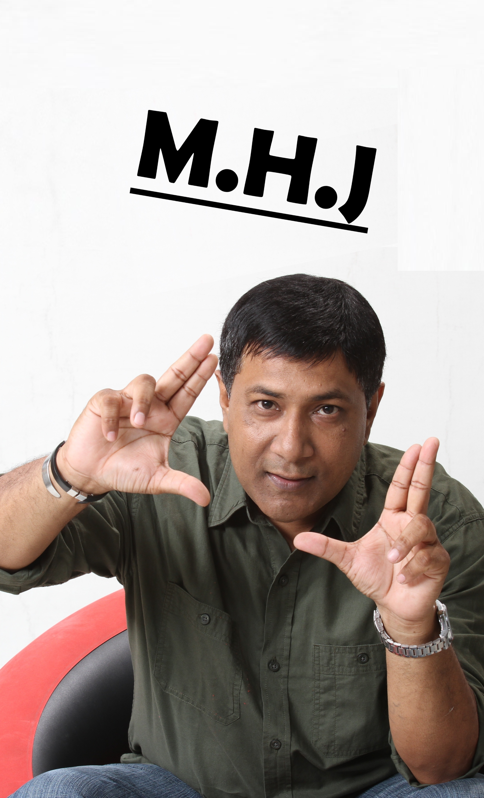
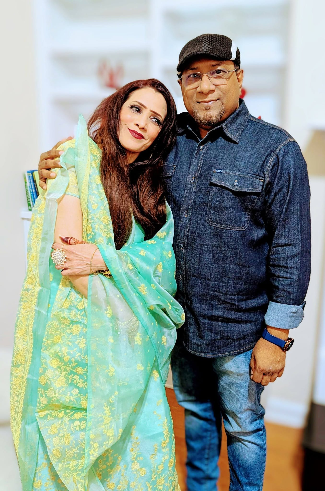

About Me
Jordan Avery is a graphic designer and part-time barista based in Portland, Oregon, where they spend their days crafting brand identities for small businesses and pulling espresso shots for the morning regulars. Whether it's sketching logo concepts on napkins, experimenting with film photography, or simply wandering the city's farmers markets in search of the perfect peach, they bring curiosity and energy to everything they take on. Known among friends and colleagues for their relentless optimism and an encyclopedic knowledge of obscure fonts, they've built a reputation as someone who can turn a vague idea into a polished visual story overnight—and who will happily talk your ear off about kerning if you let them.
Outside of work, Jordan can usually be found hiking the trails of the Columbia River Gorge or hunched over a secondhand sewing machine, turning thrifted fabric into tote bags nobody asked for—a habit that says a lot about their resourcefulness and refusal to let anything go to waste. What drives them most is the belief that good design should be accessible to everyone, not just those with big budgets, and they're currently working toward launching a sliding-scale design studio for local nonprofits. Equal parts dreamer and pragmatist, they believe that small, consistent acts of creativity can ripple outward further than anyone expects, and they're always up for a collaboration, a trail recommendation, or a heated debate about the best coffee in town with anyone who shares that outlook.

